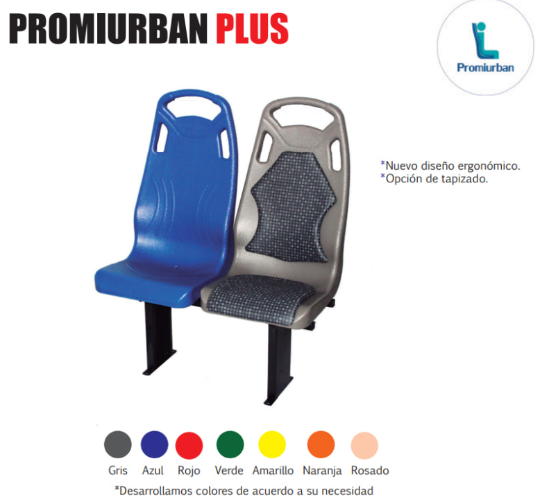
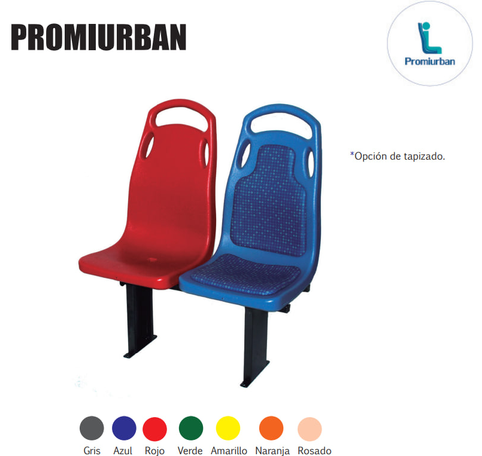
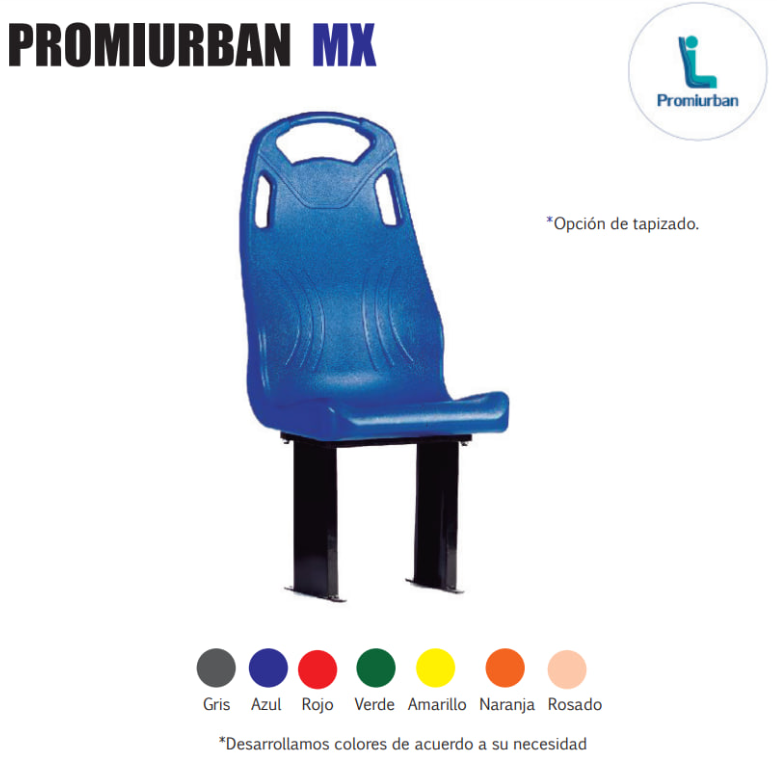

-
Contamos con la capacidad requerida para diseñar soluciones a la medida de sus requerimientos en
procesos de ensamble y acondicionamiento que representen un beneficio confiable para el cliente.
-
PROMIURBAN® es reconocida como marca líder en diseño y ergonomía. Nuestra presencia
en los proyectos más importantes a nivel de infraestructura vial en ciudades principales,
son el sello de garantía, respaldo e innovación que hace de nuestra marca y nuestra compañía su mejor
aliado.
-
CARACTERÍSTICAS Y BENEFICIOS
- Nuevo diseño ergonómico con antideslizantes especiales y mayor curvatura que le brindan mejor comodidad al pasajero.
- Asiento rígido plástico antivandálico con alta resistencia mecánica. Manijas laterales que facilitan la sujeción de niños y personas de baja estatura.
- Protección UV, para prevenir el decoloramiento acelerado
- Adaptable a cualquier sistema de transporte.
- Sistema de desagüe que permite fácil limpieza.

-
CARACTERÍSTICAS Y BENEFICIOS
- Asiento rígido plástico antivandálico con alta resistencia mecánica.
- Manijas laterales que facilitan la sujeción de niños y personas de baja estatura.
- Protección UV, para prevenir el decoloramiento acelerado.
- Adaptable a cualquier sistema de transporte.
- Sistema de desagüe que permite fácil limpieza.

-
CARACTERÍSTICAS Y BENEFICIOS
- Asiento rígido plástico antivandálico con alta resistencia mecánica.
- Su ancho de 47cm, brinda mayor confort a los pasajeros.
- Manijas laterales que facilitan la sujeción de niños y personas de baja estatura.
- Protección UV, para prevenir el decoloramiento acelerado.
- Adaptable a cualquier sistema de transporte.
- Sistema de desagüe que permite fácil limpieza.

-
Diseñamos y desarrollamos soluciones diferenciadas con espumas de diferentes densidades,
características, y procesos, que permitan brindar óptimo confort y bienestar a los pasajeros
en recorridos de largos y medianos trayectos.
-
Aislantes termo acústicos para diferentes aplicaciones y requerimientos